In this case, I made a chatbot for a real estate agency. At the moment, the real estate agency plays an intermediary role between tenant and landlord. All the questions of the tenants are coming straight to the customer service. Chatbots are a handy tool for customer services because they are able to take over a lot of frequently asked questions, and are available 24/7. Therefore, the customer service can run more efficiently and they will have extra time for their other tasks.
My official mentor was Frederick Bousson, he had help from Jasper Rosiers and Hans Vanbellingen who were my daily mentors and the people who I could reach out to if I had any questions.
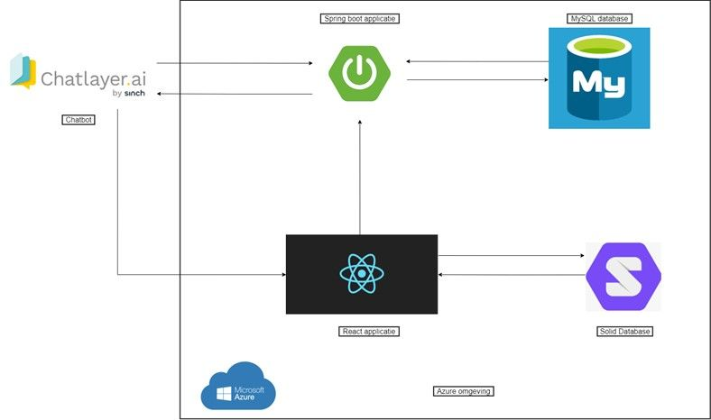
This is the setup of the project. This architecture has been changed a few times during the internship. This mostly has to do with the Solid database because this is such a new technology. At the start, we didn’t quite know how to start and how it all worked. So as the internship progressed, the architecture grew bigger. All the different parts of the architecture will be explained in depth in the next chapters. For the APIs, connecting everything together, we built a Spring Boot application.
Chatlayer
First things first, the chatbot. This is where the project begins. But before we dive into the platform I’m using to build the bot, we must have an understanding of how chatbots actually work.
Chatbots in general
Almost everyone has come across a site with a chatbot, maybe without even realizing it. Think about those little popups you see on a website offering you some help with whatever you are doing. That’s a chatbot. There are three main types of chatbots:
Rule-based
This one is the simplest type of chatbot today. People interact with this chatbot with buttons and pre-defined options.
Intellectually independent chatbots
This kind of chatbot uses machine learning which helps the bot learn from the user’s inputs and requests.
AI-powered chatbots
AI-powered bots combine the best of the previous two types. So they have predefined flows but they can also understand free written language. For the understanding of the language, the chatbot uses NLP (Natural Language Processing). This involves two processes, NLU (Natural Language Understanding) and NLG (Natural Language Generation). NLU is the ability that a chatbot has to understand the user. It maps the text that a user enters to a format that a computer can understand. Then we have NLG, the other important part of NLP. NLG is the process that, as you can probably get from the name, transforms data into words. So it’s the generation of text.
When a chatbot is asked a question, the bot will break it down into an intent and entities. Now, what exactly are these two terms?
Intents, Expressions, and Entities
Intent:
Well, an intent is something that a user would like to accomplish with the question. Another way to put it could be the user’s intention or need. Let me give an example. When a user asks a question like: ‘We need tickets to go to Brussels’. The intent is ‘buy a train ticket’.
Expression:
Another important term related to intents is ‘expression’. In order for the AI to correctly identify an intent, it has to learn a couple of ways to express a certain intent. This is where the expressions come into play. When we add an intent to the chatbot, we must provide the bot with a couple of ways a user could say/express the intent. It’s obvious that we need to provide enough examples that convey the same message for each intent. The more expressions that are added, the more accurate the chatbot will be. When you add expressions to an intent you need to make sure that there is enough variation between the different expressions.
Entities:
At last, we have the entities. These are small words or even word groups that are very relevant for the flow of the conversation. Entities could be names, cities, companies, etc. If we go back to the example I gave at Intent, Brussels is an entity. It holds the name of the city where the user would like to go to. Be aware that you should only use entities when the value is needed in the continuation of the flow.
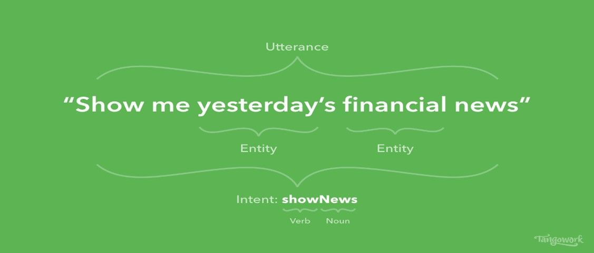
Building blocks
To build a chatbot, Chatlayer provides us with several different building blocks. Each of these has a different function. On every bot dialog, you can put an intent, a required context, and an output context.
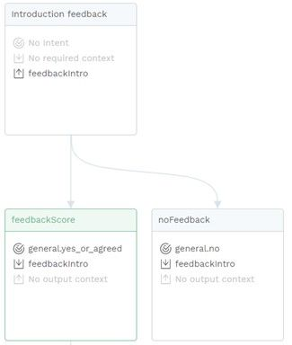
An intent is explained before so you should know what that is 😉. If the user sends a message to the bot, the AI will check if it recognizes an intent. If this is the case, the chatbot will display the message where the intent is set.
The required context and output context belong together. Think for example about the intent ‘Yes’ or ‘No’. If the bot asks a question where the user can answer yes or no, we can use these intents. But if there are multiple dialogs with the ‘Yes’ and ‘No’ intent, how could the bot know which dialog to go to?
If you take a look at this example in the first dialog, the bot asks the user if he/she wants to give some feedback about the bot. The user can answer with yes or no. If the answer is yes, the bot will go to the input validation (green), otherwise, it will go to the bot message (grey). To know to which “general.yes_or_agreed” intent the bot should go to, it can look at the output context and required context. In the dialog where the question is asked, you can give an output context. The bot will now look for a dialog with the right intent and the right context. That way you are sure that you will be going to the correct dialog.
A full tutorial on building bots within Chatlayer can be found here.
The multilingualism of the bots
To set up a multilingual bot, you first need to make the bot in the primary language. I first made my chatbot in Dutch. Afterwards, you can easily translate all the messages and intents in an overview, retrain the NLP for that language and it is done! My chatbot is set up in Dutch and English.
Not every chatbot provider offers this functionality, which is one of the reasons we chose Chatlayer in this setup.
Flows
Search a premises
Our first flow relates to searching for premises. I of course didn’t have access to the database of the real estate agency so I had to find a different solution. So in this flow, the user gets asked a lot of questions about the premises, like maximum price, location, number of bedrooms…. With this information, I could construct a URL where the user could click on. This leads the user to the real estate agency website with the search results. In a more extended practical case, the bot could list the relevant premises right into the chatbot.
At the end of each flow, the bot asks the user if he/she needs help with something else. If the user answers with yes, a new flow can begin. Below you can see the diagram of this first flow. As you can see, a lot of the parameters are optional. If the user wants to see all the houses without filling out the other questions, he/she can do so. The decision in the beginning “Does premises have bedrooms” is a decision the chatbot will make based on the type of premises the user chooses. I made this a go-to. If the type of the premises equals “houses” or “apartments”, the bot will go to the dialog where the user could enter his/her preference about the rooms. Otherwise, the bot will go to the next bot dialog.
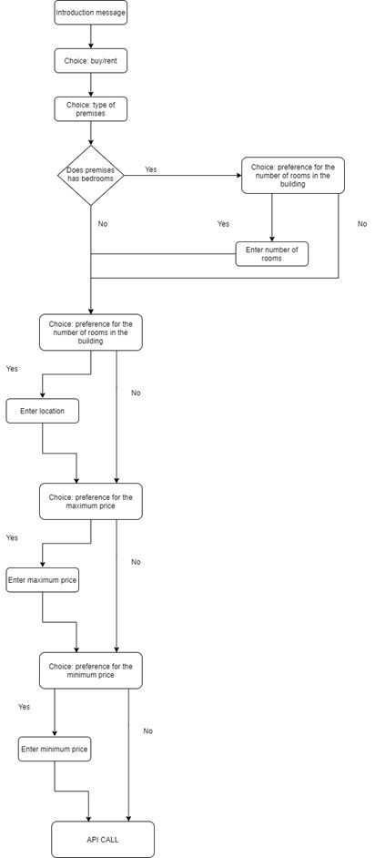
API implementation
At the end of the flow, the chatbot will send an API call with the necessary parameters to construct a URL. There is a basic url to which we can attach a piece depending on which parameter has been entered.
In the service the first thing I check is if the ‘status’ parameter has a value. The parameter can contain either ‘buy’ or ‘rent’. If this is not the case, there will be an error message which is sent back to the chatbot. The option if the user wants to buy, or to rent, is the only mandatory parameter. It could be possible that all the other parameters are empty. The rest of the function is all about checking if these parameters are null or not and attaching the correct pieces of the url.
It would be nice if we could just send a string back to the chatbot which it will display in a bot message. Sadly this is not the case. Chatlayer expects the API response to be in a specific format. The structure needs to be like the image below but they could be null.
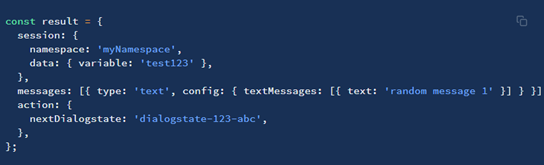
As you can see, we need to provide Chatlayer with three things:
- Session
Here we can pass along some variables that will be stored in de session storage. - Messages
Here we can specify which messages we would like to send to the chatbot, which will then display those messages to the user. It’s not limited to a normal text message, you could also construct some buttons, a carousel… - Action
This is used to specify the next dialog the bot should go to.
In this flow, I used this twice. One time to send the URL back to the user and once to display an error message if something has gone wrong. Because this was the first simple flow that we had set up in the chatbot and we knew that this was not the main flow I had chosen to, for now, just send the URL back to the chatbot as a text message.
Report a problem / ask a question
The second flow has a connection to the React application and is able to send problems/questions to the API which saves these in the database. More about the React application, API, and database come later in this blog.
To start at the beginning, the first thing a user has to do is log in to his/her Solid environment and specify their role (tenant/landlord). When the user is logged in, the chatbot gets the information about the user and the next bot dialog is being shown based on the role. Currently, only the tenant flow is worked out. The user gets a message from the bot that they can ask their question. It gives a few examples where the user could choose from.
Database
In the architecture you can see that there is a MySQL database. You might wonder “If we already use a Solid database, then why would we use another?”. A Solid database is not really designed for searching through large amounts of data. So the data from the Solid is copied to this database in the cloud where we can easily search through the data. Below you will find a simple ERD of the database. I made this together with Jasper. This is the only flow where the database is currently used.
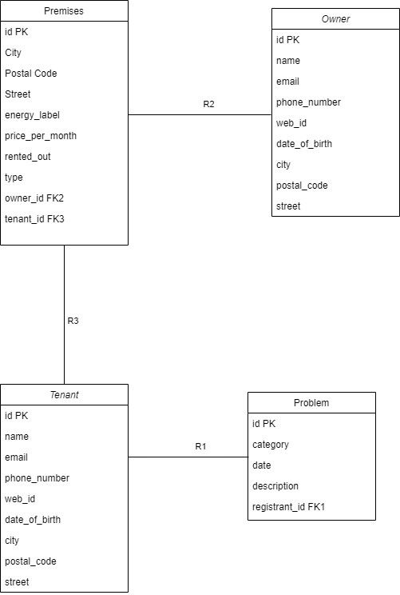
Repairs
One of the paths that are worked out is if the user has a reparation that needs to be done or they have a question about who has to pay for the reparation. The user can reach this flow by clicking “Repairs” at the start, or just asking their question. They would have to answer a couple of questions about the reparation, think about the location and what is broken or needs to be repaired. Then, the bot will answer the most important question: “who has to pay for this?”. At the end of the conversation, the chatbot will send a request to the API with the problem and the user information to be saved in the database.
Renovation / design
The other path that is worked out is for the design and renovation questions. When the user clicks on “questions about the house”, he/she will get the first choice, is it a question about the design, or renovations. Design questions are for example questions about the repainting off the walls. This is a question that the bot could answer.
In the part about the renovations the bot says that all the big renovations must be discussed with the landlord. The bot then proposes to send an email to the landlord with the question. The user only has to type the body of the email. He/she gets to re-read the email to check for mistakes and then the bot will send the email.
Google calendar integration
Getting acces & enable API
To get access to the API there are some different steps we need to follow.
The first step is enabling the Google Calendar API in the API console. To do this, we need to create a project on the Google Cloud Platform. Then we can navigate to the API library and enable the calendar API for our project.
When this is done, the next step is to create a client id. This can also be done in the Google Cloud Platform. The redirect URI is important here because this is where the access token is sent to. As you can see in the image below, when the client id is created, you get the client id and the client secret. These are important for authentication later on in this flow.
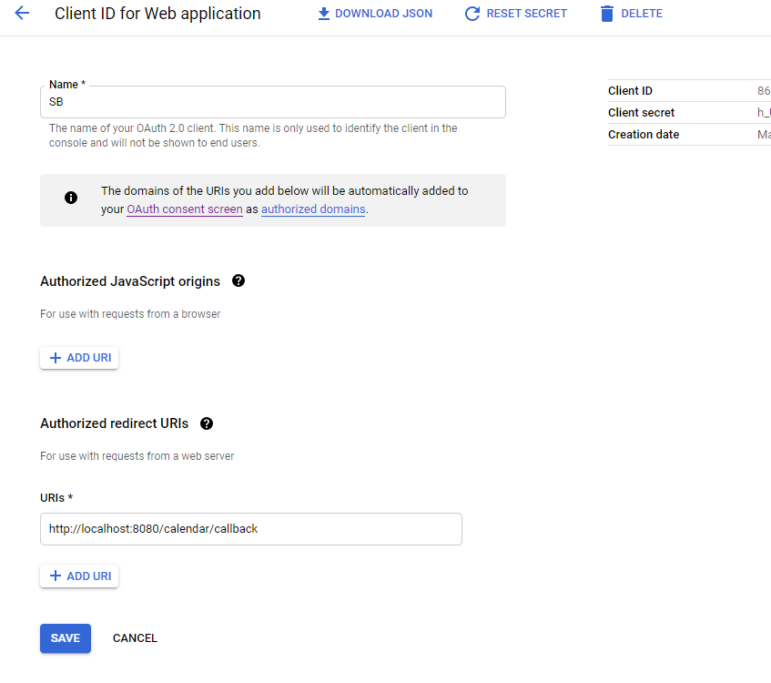
With the flow I’m following you won’t only get an access token back from the server but also a refresh token. This is needed because the connection with the API and the collection of the free meeting times all happens in the Spring Boot application without the interference of a user. The first time the user will have to open a url in the browser to authenticate him/her-self and give consent that the application may have access to the calendar of the user. The following times that we need to access the API, we can simply use the refresh token to get a new access token from the server.
Get Authorization code
This step only gets executed the first time that the user logs in. So we start the process by asking the Google OAuth 2.0 server for an authorization code.
@Override
public String getAuthTokenGoogle() throws Exception {
AuthorizationCodeRequestUrl authorizationUrl;
GoogleClientSecrets.Details web = new GoogleClientSecrets.Details();
web.setClientId(googleApiClient);
web.setClientSecret(googleApiSecret);
clientSecrets = new GoogleClientSecrets().setWeb(web);
httpTransport = GoogleNetHttpTransport.newTrustedTransport();
flow = new GoogleAuthorizationCodeFlow.Builder(httpTransport, JSON_FACTORY, clientSecrets,
Collections.singleton(CalendarScopes.CALENDAR)).build();
authorizationUrl = flow.newAuthorizationUrl()
.setRedirectUri(redirectUri)
.setAccessType("offline");
return authorizationUrl.build();
}
In the code above, we get the url where the user should login. We need to pass the client id and the client secret with the request as well as the redirect URI. You could also see that I only ask for the calendar scope, which is the only one I needed for this project. When the user opens this URL in the browser, the user has to login to his/her Google account after which Google prompts the user for consent to grant access to the calendar. When the login is successful, the server will send the authorization code back to the redirect URI specified in the request.
Exchange authorization code for refresh and access tokens
When the redirect URI is called, the following function is executed:
@Override
public ResponseEntity<String> callback(String code) {
com.google.api.services.calendar.model.Events eventList;
String message;
try {
TokenResponse response = flow.newTokenRequest(code).setRedirectUri(redirectUri).execute();
credential = flow.createAndStoreCredential(response, "userID");
client = new com.google.api.services.calendar.Calendar.Builder(httpTransport, JSON_FACTORY, credential).build();
Events events = client.events();
eventList = events.list("primary").setTimeMin(date1).setTimeMax(date2).execute();
message = eventList.getItems().toString();
} catch (Exception e) {
LOG.warn("Exception while handling OAuth2 callback (" + e.getMessage() + ")."
+ " Redirecting to google connection status page.");
message = "Exception while handling OAuth2 callback (" + e.getMessage() + ")."
+ " Redirecting to google connection status page.";
}
return new ResponseEntity<>(message, HttpStatus.OK);
}
This is the part where we are exchanging the authorization code for the access and refresh tokens. When I got those tokens from the server, I manually set the refresh token in the application.properties file so I could use it later to get new access tokens. As a test, there is also some code to get the events between two dates, to make sure that I have access to the Google calendar API with the acquired access token.
Getting an acces token with the refresh token
In the actual flow I used the refresh token to get an access token from the Google server. This can be done with a simple POST request to the server with the client id, client secret and the refresh token. We then get a response with a new access token which we can use to send the request to the API.
Getting the data from the calendar
Creating new client
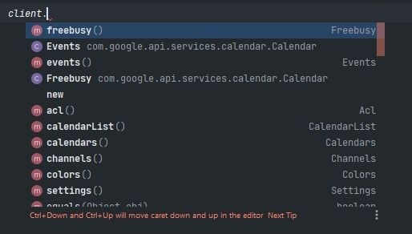
As you could see in the code examples above, to have easy access to the calendar and get the events etc. we create a client object. The client object is an instance of the Calendar object.
With this object we can get the calendars, the events and much more.
Get freebusy schedule
Because we need the free meeting times of the user, we would need the freebusy schedule. This gives us an overview when the user is busy and we can extract the free meeting times from that. To know for which date I have to get the freebusy schedule, I first get the next 5 working days in the chatbot from which the user can choose. This date is then forwarded to the API to retrieve the schedule.
List<FreeBusyRequestItem> items = new ArrayList<>();
FreeBusyRequestItem freeBusyRequestItem = new FreeBusyRequestItem();
freeBusyRequestItem.setId("iebemaes");
items.add(freeBusyRequestItem);
Calendar.Freebusy freebusy = client.freebusy();
FreeBusyRequest freeBusyRequest = new FreeBusyRequest();
freeBusyRequest.setTimeMin(dateTimemin);
freeBusyRequest.setTimeMax(dateTimeMax);
freeBusyRequest.setCalendarExpansionMax(2);
freeBusyRequest.setGroupExpansionMax(2);
freeBusyRequest.setTimeZone("UTC");
freeBusyRequest.setItems(items);
Calendar.Freebusy.Query query = freebusy.query(freeBusyRequest);
FreeBusyResponse freeBusyResponse = query.execute();
Get free meeting times
To get the free meeting times, I made a list with all the timeslots starting every hour. Then I looped over this list and the list with the busy timeslots. When the start hour of a busy timeslot matched with the start hour of a timeslot from the first list, I deleted this timeslot from the first list. That way I ended up with a list with only free timeslots.
Send the meeting times back to Chatlayer
Now that we have a list with all the free timeslots, we need to get this list in the chatbot. I wanted the timeslots to appear in the chatbot as quick replies. For each item in the timeslot list there should be a quick reply item. When I had the correct structure, I could send these quick replies back to Chatlayer with a simple POST request.
for(String meetingTime: meetingTimes){
String[]hours=meetingTime.split("-");
QuickRepliesItem quickRepliesItem=new QuickRepliesItem();
String title=hours[0]+"u tot "+hours[1]+"u";
quickRepliesItem.setTitle(title);
quickRepliesItem.setImageUrl("https://upload.wikimedia.org/wikipedia/commons/thumb/0/08/Simple_icon_time.svg/1200px-Simple_icon_time.svg.png");
SessionDataToSetItem sessionDataToSetItem=new SessionDataToSetItem();
sessionDataToSetItem.setKey("chosenTimeSlot");
sessionDataToSetItem.setValue(meetingTime);
List<SessionDataToSetItem> sessiondata=new ArrayList<>();
sessiondata.add(sessionDataToSetItem);
Payload payload=new Payload();
payload.setNextDialogstateId("045eac85-9c67-4b44-a0f5-aaacb724dbc6");
payload.setSessionDataToSet(sessiondata);
quickRepliesItem.setPayload(payload);
quickReplies.add(quickRepliesItem);
}
Create an event
The last step in this flow is of course the creation of an event in the calendar. When the user has selected a day, a timeslot and entered his/her name and address, the event needs to be saved in the calendar. This can also be done with the client object. So I pass the previously stated parameters to the API which will create the event.
@Override
public void createEvent(String date, String meetingTime, String name, String address, String problemType) throws Exception {
String[] hours = meetingTime.split("-");
Event event = new Event();
event.setSummary("Herstelling bij: " + name);
event.setDescription("Herstelling van: " + problemType);
event.setLocation(address);
Date date1=new SimpleDateFormat("yyyy-MM-dd").parse(date);
java.util.Calendar calStartDate = java.util.Calendar.getInstance();
calStartDate.setTime(date1);
calStartDate.add(java.util.Calendar.HOUR_OF_DAY, Integer.parseInt(hours[0]));
Date startDate = calStartDate.getTime();
DateTime dateTimemin = new DateTime(startDate);
EventDateTime start = new EventDateTime();
start.setDateTime(dateTimemin);
event.setStart(start);
java.util.Calendar calEndDate = java.util.Calendar.getInstance();
calEndDate.setTime(date1);
calEndDate.add(java.util.Calendar.HOUR_OF_DAY, Integer.parseInt(hours[1]));
Date endDate = calEndDate.getTime();
DateTime dateTimeMax = new DateTime(endDate);
EventDateTime end = new EventDateTime();
end.setDateTime(dateTimeMax);
event.setEnd(end);
String calendarId ="primary";
event = client.events().insert(calendarId, event).execute();
}
After the event is created in the calendar, I’m sending a response message to the chatbot that the event is created and setting the appropriate next dialog id.
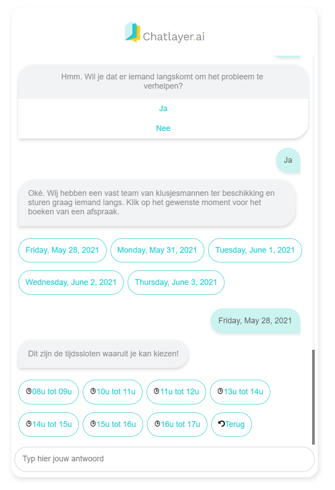
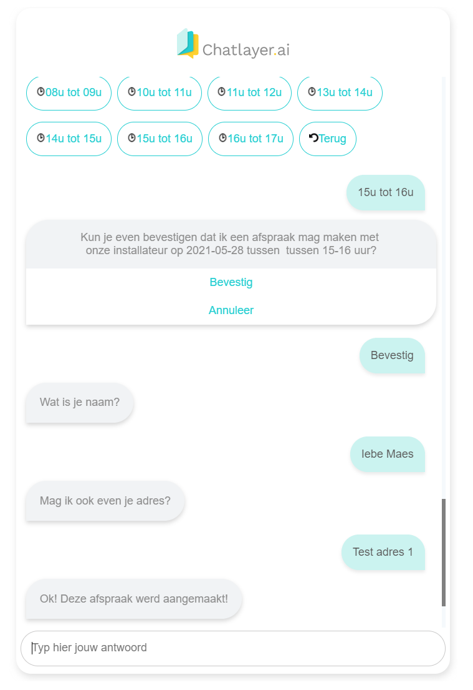
Solid
Introduction to solid
Why do we use solid?
There are a couple issues with the way we handle data for which Solid can provide a solution.
Some examples of issues today:
- In the personal data domain, there are a couple of big Tech companies who own the biggest part of our data
- Problems with data-monopolies
- Security risks
- Data-breaches
- Les innovation
- Political concerns
- Can affect the public debate and our perception of right and wrong
- Security risks
- Companies are so successful because they have such a large amount of data, not because of their innovations
- Because of these couple big companies, it is difficult for new companies to innovate because they don’t have the data for it
- Examples
- Amazon
- …
- Examples
- Problems with data-monopolies
- People have lost control of their data
- Hardly any visibility into what of your data is being retained
- Little to no control over how your data is used and who is using it
- …
What is solid?
Solid (Social Linked Data), made by Tim Berners-Lee, is a specification which lets users store their data securely in a decentralized data store called pods. Solid itself isn’t much of an innovation, the innovation comes in bringing together different existing rules. Solid is based on open specifications just like the web itself. Open specifications mean interoperability across a broad ecosystem. The goal of Solid is to bring back data driven innovation and data ownership.
In the Solid ecosystem, there are three important concepts: users, apps and pods.
User:
- Control which apps, organizations and people can access which part their data
- Easier data sharing
- Retains ownership and control over the data in his/her pod
- Can have more then one pod
- Pods can be hosted my the same pod provider or be self-hosted or a combination
Applications:
- Store and access data in pods
- Can get information from different pods
Pods:
- The data stores where you store your data
- You can store any kind of data in a Solid pod
- Right now you can get your pod from a pod provider or you could host your pod yourself
Self hosting solid pod server
There are different ways to setup a pod server where you can host your pod(s). I used the Docker container to setup my Solid server.
To run the docker container I could execute this command in a terminal:
docker run -p 8443:8443 --name solid-server.
If we navigate to localhost:8443, we visit the homepage of the Solid server. First we get the message that the page is not secure but when clicking through, we arrive at the page where we can register a new account or login to an existing one.
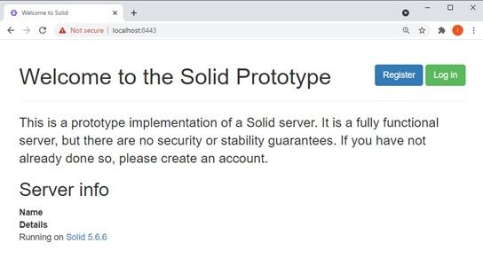
{
"root": "./data/localhost.com/",
"port": "8443",
"serverUri": "https://localhost:8443",
"webid": true,
"mount": "/",
"configPath": "./config",
"dbPath": "./.db",
"sslKey": "./privkey.pem",
"sslCert": "./fullchain.pem",
"multiuser": true,
"corsProxy": "/proxy",
"server": {
"name": "",
"description": "",
"logo": ""
},
"enforceToc": true,
"disablePasswordChecks": false,
"tocUri": "https://your-toc",
"supportEmail": "Your support email address"
}
When you host a pod server, there are some configuration options which you can modify. I think the most important one here is whether or not you want your server to be able to host more than one pod or not. For testing purposes, I set the multiuser setting to true so my server is capable of hosting multiple pods.
Register
When you want to register an account you need to provide some simple information like your name, email address, password and username. As you can see below, when creating an account, your webId (unique identifier for Solid pods) is made of your username and the domain (in this case this is localhost:8443). The /profile/card#me is just to specify where your profile information is stored. When registering a new account you need to add an entry for it in you local hosts file like this:
127.0.0.1 newuser.localhost
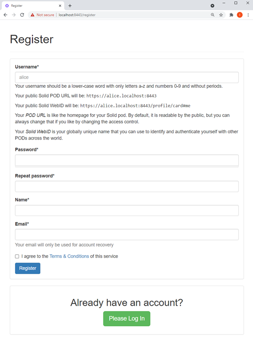
Login
When the account is created you could login to your own Solid pod. When you login you first get a popup. You can enter your webId or you identity provider. In this case I’m logging in with my identity provider.
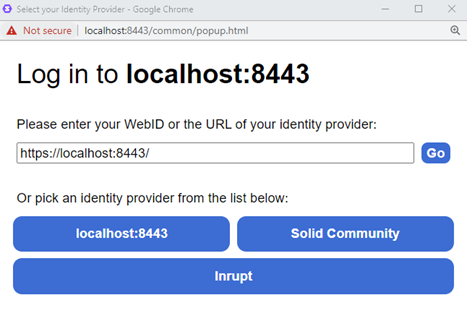
And enter your username and password which you specified when the account is registered.
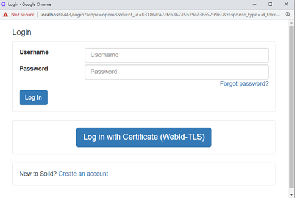
Edit profile
As a logged in user you can see your profile, but when you first login there is nothing there. However, you can easily edit your own information.
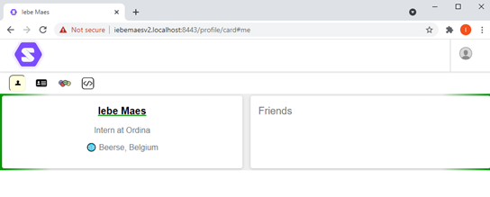
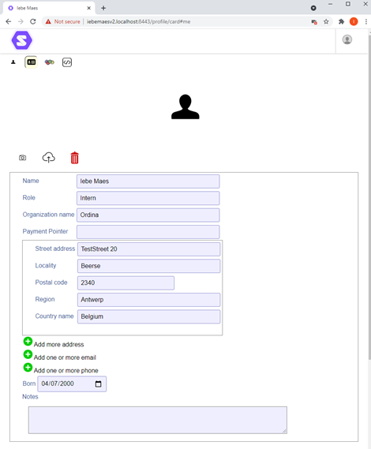
Your data
Of course, the main thing you want to know about Solid is your storage. When the pod is created you have these standard sections ready for you. The sharing settings for these folders have also been set when the pod is created. Profile and public are two folders which everyone can read but not change. And as you would expect, private is only for you.
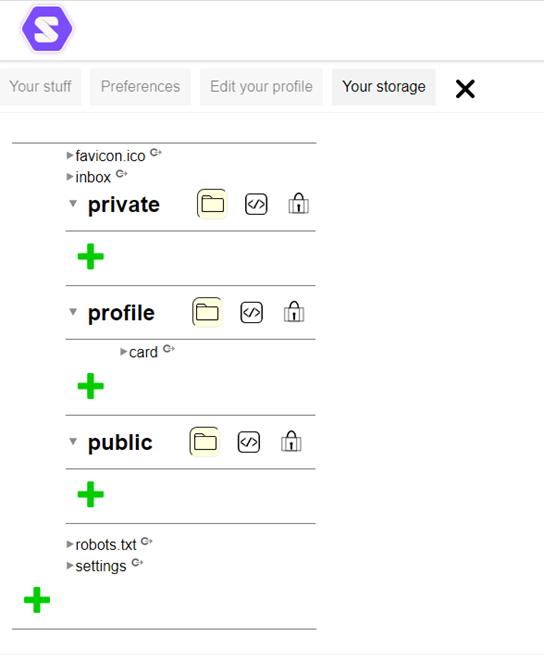
Sharing of data
Within the Solid interface it is very easy to share data with other people, groups, apps…
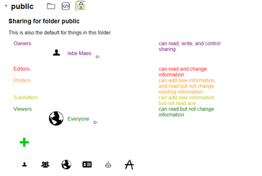
You could set these sharing permissions on a folder but also on a specific file. In the standard scenario the files inside a folder just inherit the sharing permissions.
Solid also has a nice overview of which applications have access to your pod, and also which kind of access they have (read, write, append or control). In this overview you could also revoke access and update the kind of access that these applications have.
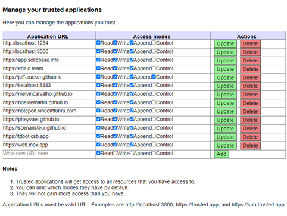
As mentioned before, you can store any kind of data on your pod, this goes from .txt files, to .html files and even .ttl files. For this project I’ve chosen to store data in .ttl files because that’s what I saw the most in the documentation.
Turtle (RDF)
Before we can discuss Turtle we need to have a basic understanding of RDF and linked data. RDF stands for Resource Description Framework and is used to describe resources on the internet. A resource is anything on the internet, for example: a person, a book… With RDF every resource is described as a triple. Those triples consist of a subject, a predicate and an object. Using this simple model, data (structured and semi-structured) can be mixed and shared between different applications. This linking structure forms a directed and labeled graph.
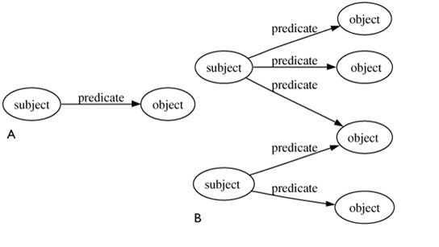
Turtle itself is a format that allows RDF graphs to be written in a natural text form. Next to N-Triples, JSON-LD and RDF/XML it is one of the four common formats to write RDF. In Turtle you can declare prefixes to use as a shortcut throughout the rest of the file so you don’t have to write full URI’s everywhere.
Example: This is the card file in the profile folder which contains all the information about the user.
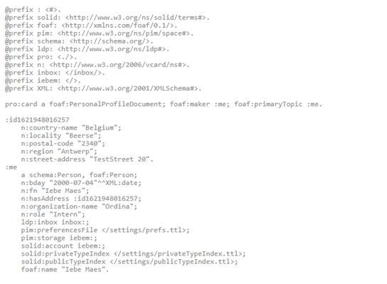
The full notation for the full name would be:
#me http://www.w3.org/2006/vcard/ns#fn Iebe Maes
Because of the short notation, Turtle is much easier to understand than the other formats.
How to acces your data?
The login page is built in React.
The first step to get information in your solid pod is authentication. Luckily Solid has a library with some nice components that make the login process much easier.
import { LoginButton, LoggedOut, LogoutButton, LoggedIn } from '@solid/react';
<LoggedIn>
{this.state.needsToLogin ? <GetInformation sendInformation={this.sendInformation} /> :
<Row>
<Col><h1 className="text- center">Informatie is correct binnengekomen! U mag terugkeren naar de chatbot.</h1></Col>
</Row>}
</LoggedIn>
<LoggedOut>
<Row className="justify-content-md-center mt-5">
<Col md="auto">
<h1 className="text-center">Welkom!</h1>
<h3 className="text-center">Gelieve u aan te melden.</h3>
</Col>
</Row>
<Row className="justify-content-center">
<Col md="auto text-center">
<LoginButton className="btn btn-primary" popup="popup.html">log in </LoginButton>
</Col>
</Row>
</LoggedOut>
The loggedIn and loggedOut component do exactly what you expect them to do, show some content when the user is logged in and show other content when the user isn’t logged in. Then we have the loginButton component which shows popup.html which is the popup screen you see in the login section above.
To get the actual data, from for example the profile, you would first need to get the webId. You can get this with the react hook provided by the same library from above.
const webId = useWebId();
Then we would need the data object.
const { default: data } = require('@solid/query-ldflex');
And with the data object and the webId, we can get the profile. Once we have this object you can ask for anything you see in the structure off the profile card under :me. Because your webid is something like “username.domain/profile/card#me”. The profile object we would get would actually be the #me part of the card.
const profile = data[webId];
To get the full name, we place the predicate between [ ] after the profile object.
const fn = await profile['http://www.w3.org/2006/vcard/ns#fn']
You can also see that for example the address isn’t stored under the :me part but it has an id. To get the properties of the address we would have to do something like this:
const addressURL = await profile['http://www.w3.org/2006/vcard/ns#hasAddress']
const city = await addressURL['http://www.w3.org/2006/vcard/ns#locality']
const postalCode = await addressURL['http://www.w3.org/2006/vcard/ns#postal-code']
const street = await addressURL['http://www.w3.org/2006/vcard/ns#street-address']
Conclusion
First of all, I want to thank Ordina for the chance that they have given me to do this internship. Also a special thanks to all three of my mentors: Frederick Bousson, Jasper Rosiers and Hans Vanbellingen! They always provided me with feedback when I finished a part of the solution and would always make time to help me with my questions or to explain things that weren’t clear.
It really was an educational internship, where I’ve learned a lot!
- I learned more about how to properly develop a Spring Boot application
- I’ve been researching Solid
- What it is
- How to set it up
- How to extract data
- I’ve learned how to make chatbots with Chatlayer and understanding how they work
- Got a more thorough understanding of how to write unit tests
- Learned how to work with google API’s
- Taken a look at Azure AD
- Taken a look at how Ordina approaches the start of a project
This internship has really given me the feeling that I chose the right study.
The only sad thing about this internship was that it was during the Covid-19 pandemic so I haven’t had the chance to really experience the work-life @Ordina. Despite corona, I had a very nice time working on this project.
Would you like to leave a comment?